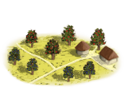
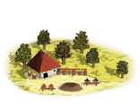

RTR: Imperium Surrectum
RTR: Imperium SurrectumOrchards (Rural) chain
2 levels, each replacing the one before it — you upgrade in place rather than building alongside.
Orchards (Rural) → Fruit Dryer (Rural)
Pictures are the game's own building art. Where a culture ships none of its own, the game falls back to another culture's, and that is what is shown here.
Levels at a glance
| Level | Cost | Build time | Minimum settlement | Upgrades to | Level | Cost | Build time | Minimum settlement | Upgrades to | ||
|---|---|---|---|---|---|---|---|---|---|---|---|
 | Orchards (Rural) | 1,000 | 3 | town | Fruit Dryer (Rural) |  | Fruit Dryer (Rural) | 4,500 | 5 | large town | — |
Costs in denarii, build time in turns.
Fruit Dryer (Rural)

Drying fruit for road trips, winters, and long speeches.
Here, the fruit dryer extends the lifespan of figs, dates, and other fruity treats, ensuring the taste of summer lasts long after the harvest.
These dried fruits serve soldiers, travelers, and winter hoarders who find joy in a touch of sweetness during the colder months, or when the bread starts tasting like straw.
| Cost | 4,500 denarii | Build time | 5 turns | Minimum settlement | large town |
What it does
- +1 farming level
- +1 population health
- +1 trade income
Orchards (Rural)

Orchards of offerings, snacks, and maybe a little profit.
These orchards yield a rich harvest of figs, apples, olives, and other fruits that make gods and mortals alike thankful (and slightly sticky).
Farmers tend to the trees with care, knowing that each apple might end up as an offering at the temple or as the main course of a family feast.
In good years, surplus fruit is sold, turning nature’s bounty into jingly coin.
| Cost | 1,000 denarii | Build time | 3 turns | Minimum settlement | town | Upgrades to | Fruit Dryer (Rural) |
What it does
- +1 population health